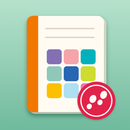

おさんぽ日記
写真とビンゴで、毎日のおさんぽを記録する日記アプリ（iPhone）
使い方
1日1ページの日記に、その日の歩数と行った場所が自動で並びます。近くにある本当のお店や場所でビンゴをしたり、今週の色を写真で集めたりできます。
- 日記：開くと今日のページ。‹ › で前の日・次の日へ。気分・天気・ひとこと・写真を書けます。ビンゴやカラーハントで見つけたものも、その日のページに並びます
- ビンゴ：毎週月曜に新しくなる「今週のビンゴ」（4×4）と、いまいる場所の近くの神社・パン屋・公園などで作る「近くの場所ビンゴ」（3×3）。マスをタップすると、その場所の地図と距離、マップアプリで歩く道順を開くボタンが出ます
- カラー：今週の色に合うものを写真で8枚集めます
- 見返す：月のカレンダーと、今月のまとめ（歩数・距離・行った場所・ビンゴ・集めた色・写真）
- きろく：この1週間のグラフと、これまでの合計・連続記録
- 設定：行った場所を自動で日記に残す・近くの場所を使う（OpenPOI）・毎日のお知らせ
よくある質問
歩数が表示されない
設定アプリの「プライバシーとセキュリティ」→「モーションとフィットネス」で、おさんぽ日記をオンにしてください。iPhone の歩数計は7日前までしかさかのぼれないため、それより前の日は、アプリを開いたときに控えた歩数だけが表示されます。
行った場所が日記に出ない
設定タブの「行った場所を自動で日記に残す」をオンにして、位置情報を「常に」にしてください（設定アプリの「位置情報」→「おさんぽ日記」）。iPhone の省電力のしくみ（訪問の検出・大きな移動の検出）を使うため、しばらくいた場所だけが記録され、数分おくれて届くことがあります。「正確な位置情報」がオフだと、場所がずれたり見つからないことがあります。
電池の減りが心配
行った場所の記録には、GPS をずっと動かすのではなく、iPhone がもともと持っている省電力のしくみだけを使っています。気になるときは、設定タブでいつでもオフにできます。
近くの場所ビンゴのお店がまちがっている・ない
近くの場所は OpenPOI API（日本の施設データ）と Apple のマップから探しています。名前から種類を見分けているため、まれにちがう種類の場所が入ることがあります。「いまの場所で作り直す」で作り直せます。データは約500m四方ごとに24時間保存しているので、設定タブの「調べた場所の一時データを消す」で消すと最新のデータで作り直せます。
データを消したい・引き継ぎたい
日記・写真・行った場所の記録は、この iPhone の中にだけ保存しています。アプリを削除すると記録も消えます。ほかの端末への引き継ぎにはまだ対応していません。
場所のデータ
近くの場所の名前と位置は OpenPOI API のデータを使っています（出典の詳細はリンク先をご覧ください）。地図・場所の名前の一部は Apple のマップを使っています。
お問い合わせ
不具合やご要望は、メールでお知らせください。お使いの iPhone の機種と iOS のバージョンを書いていただけると助かります。